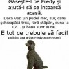
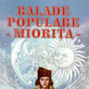

Un caz cu spioni, politicieni, interese imobiliare, trafic de arme, căpuşe ale sistemului sanitar şi vânătoare de active iese la iveală odată cu schimbarea din funcţie a unui “băiat deştept”. PD-L-istul Ionel Aurel Lascu, fost secretar de stat, şef al Departamentului pentru Armamente din Ministerul Apărării Naţionale a fost demis din funcţia de director general [...]

Realitatea lui Sebastian Ghiţă, numită iniţial RTV, continuă să îşi schimbe identitatea publică. După ce şi-a modificat sloganul în urmă cu două săptămâni, sincerul „Noi facem Realitatea” devenind comercialul „Noi dăm ştirea exactă”, televiziunea se botează România TV, într-o campanie care seamănă izbitor cu stilul Pro TV. Până şi ziua „de naştere” e copiată, data [...]
Îl mai ţineţi minte pe Andrei Răzvan Plăcintă, fiul senatorului PDL de Vrancea, Sorina Luminiţa Plăcintă, proaspătă mireasă pentru a treia oară? E băiatul cel hotărât, care, după ce şi-a umplut iubita de sânge încercând să o convingă de dragostea lui, s-a dat huţa cu maşina de 26 (două zeci şi sase) de ori peste un [...]

Obişnuiţi să dărâme rafturile magazinelor pentru a umple cărucioarele până le crapă roţile, românii împovăraţi de criză s-au mutat vineri pe Internet, unde au prăjit serverele magazinelor online în căutare de chilipiruri. Reducerile spectaculoase, reale, n-au prea venit. Chiar şi aşa, liderul pieţei, eMag, a vândut în valoare de peste 8 milioane de euro până [...]

După ce au epuizat jelania prilejuită de costurile estimate ale încălzirii, încă din primele zile ale lui decembrie, ziariştii se apucă să ne explice cât de rupţi în dorsală suntem şi cum criza (sau Băsescu) o să ne lase fără sarmale, brad şi artificii. Nu se poate să treacă postul fără să aflăm că: „românii [...]
Cu vreo câteva zile în urmă, Bankingnews.ro ne trimitea să ne ducem nevoile la BCR, asigurându-ne că vom lua şi bani pentru asta. Acum recidivează şi îl fac pe Mugur Isărescu analfabet. Să râdem cu cele mai importante penibile ştiri marca Banking News: Dacă bancherii, citez, „îşi punea pistolul la tâmplă”, n-ar fi rău ca unii [...]

Şi mai ales ce să nu faci. Un bucureştean, probabil intelectual tip şoarece de bibliotecă, îşi pierde câinele. Ce se gândeşte el că are de făcut? Un afiş A4, pe care îl concepe ca pentru sine, sub imperiul dramei personale pe care dispariţia lui Fredy tocmai i-o produsese. „Câine pierdut!!!” e titlul aproape literar cu [...]

Pentru ziaristul neaoş, anotimpul friguros începe de prin octombrie. Nu din cauza răcirii globale, ci din pricina băieţilor din Parlament care au şi ei nişte afaceri cu anvelope, ca tot românul de valoare. Cauciucurile de iarnă sunt pretextul perfect pentru reportaje, dezbateri şi analize. Deşi soarele încă mai zâmbeşte călduţ la fereastră, reporterii se întrec în [...]

Trei români au aplicat cu succes metoda Maradona asupra unei americance, căreia i-au uşurat buzunarele de vreo 500 de euro. Victima era turistă la Roma, iar incidentul a avut loc în centrul capitalei italiene, conform Roma Oggi Notizie. Ghinionul „alor noştri” a fost, de această dată, poliţia feroviară italiană, care i-a prins niţeluş cam în [...]

- A lăsat cineva uşa deschisă la lift de nu mai porneşte? – Nu. – Atunci înseamnă că l-au oprit ăştia. Cine ştie ce-or face… oftează a pagubă pensionara sprinţară şi revine în apartamentul ei (ca să vezi, bătrânii care aglomerează străzile de cele mai mult ori chiar nu au vreo treabă urgentă, ci doar [...]

Paul Georgescu, un taximetrist bucureştean în vârstă de 52 de ani din Colentina, a câştigat la loto (6 din 49) cam 5,5 milioane de euro cu un bilet cumpărat pe 13 noiembrie de la o agenţie de cartier. Cam cât timp credeţi că va trece până când vom citi ştirea „Paul Georgescu, miliardarul de la [...]

Nu te pune rău cu angajaţii, că s-ar putea s-o păţeşti! Şi mai ales nu da afară lideri informali. Un sfat pe care Valentin Ionescu, directorul general al Bursei de Valori Bucureşti (BVB) până astăzi, l-a ignorat. Astfel că a fost schimbat de la conducerea instituţiei la câteva zile după ce compania pe care o [...]